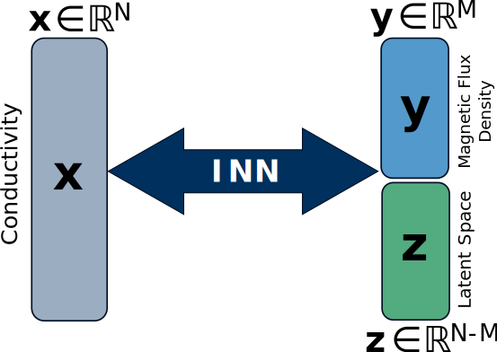
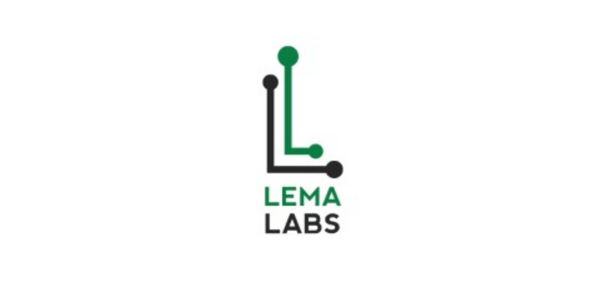

Welcome
I am a Research Scientist in AI/ML at Helmholtz Zentrum Hereon in Geesthacht, Germany. My work involves developing a climate model to understand atmospheric, oceanic, and sea ice interactions across seasonal to decadal timescales. This project is funded by the Helmholtz Foundation Model Initiative and supported by Helmholtz AI.
Prior to this, I completed my PhD in the CGV group at the Faculty of Computer Science, TU Dresden in Dresden, Germany, supervised by Prof. Dr. Stefan Gumhold. My PhD research focused on Out-of-Distribution Detection, Deep Probabilistic Generative Models, and solving Inverse Problems using Invertible Neural Networks.
Before my PhD, I completed a Master's in Electrical Engineering at TU Dresden, Germany, graduating with the highest distinction. I earned my Bachelor's in Electronics and Communication Engineering at Dr. MGR Educational and Research Institute, Chennai, India, where I was the university topper and a gold medallist.
I have worked as a data engineer at HCL Technologies in Chennai, India, and as a software engineer at Samsung India Electronics in Noida, India. At TU Dresden, I secured research funding from the German federal government and led a research group on an industrial project focused on reliable machine learning in collaboration with Carl Zeiss Meditec AG, Germany.
Reviewing Activities: IEEE Sensors, MICCAI 2024, MICCAI 2025.
News
[Nov 2024] I defended my doctoral dissertation and earned the title 'Dr.-Ing'.
[Jan 2024] Our paper was accepted at AAAI 2024.
[Mar 2023] Our paper was selected as a highlight at CVPR 2023, placing it in the top 10% of accepted papers.
[Sep 2022] Our paper was accepted at ACCV 2022.
[Jan 2021] I secured 100,000 € funding from BMBF to lead an AI project in collaboration with Carl Zeiss Meditec AG.
[Jan 2020] Our paper was accepted at ISBI 2020.
Publications
-
For a full overview of my publications, visit my Google Scholar page.
-
FusionINN: Decomposable Image Fusion for Brain Tumor Monitoring
Nishant Kumar, Ziyan Tao, Jaikirat Singh, Yang Li, Peiwen Sun, Binghui Zhao, Stefan Gumhold
IJCAI Workshop 2024 (Oral)
[arXiv] [DOI] [Code] [Slides] -
Quantile-based Maximum Likelihood Training for Outlier Detection
Masoud Taghikhah*, Nishant Kumar*, Siniša Šegvić, Abouzar Eslami, Stefan Gumhold
AAAI 2024, *Joint First Author
[arXiv] [DOI] [Code] [Poster] -

Robust Reconstruction of the Void Fraction from Noisy Magnetic Flux Density Using Invertible Neural Networks
Nishant Kumar, Lukas Krause, Thomas Wondrak, Sven Eckert, Kerstin Eckert, Stefan Gumhold
Sensors 2024
[DOI] -
 Normalizing Flow based Feature Synthesis for Outlier-Aware Object Detection
Normalizing Flow based Feature Synthesis for Outlier-Aware Object Detection
Nishant Kumar, Siniša Šegvić, Abouzar Eslami, Stefan Gumhold
CVPR 2023 (Highlight)
[arXiv] [DOI] [Code] [Poster] [Slides] [Video] -
Enhancing Fairness of Visual Attribute Predictors
Tobias Hänel, Nishant Kumar, Dmitrij Schlesinger, Mengze Li, Erdem Ünal, Abouzar Eslami, Stefan Gumhold
ACCV 2022
[arXiv] [DOI] [Code] [Poster] [Video] -
FuseVis: Interpreting Neural Networks for Image Fusion Using Per-Pixel Saliency Visualization
Nishant Kumar, Stefan Gumhold
Computers 2020
[arXiv] [DOI] [Code] [Video] -
Visualisation of Medical Image Fusion and Translation for Accurate Diagnosis of High Grade Gliomas
Nishant Kumar, Nico Hoffmann, Matthias Kirsch, Stefan Gumhold
ISBI 2020
[arXiv] [DOI] [Code] -
Structural Similarity based Anatomical and Functional Brain Imaging Fusion
Nishant Kumar, Nico Hoffmann, Martin Oelschlägel, Edmund Koch, Matthias Kirsch, Stefan Gumhold
MICCAI Workshop 2019
[arXiv] [DOI] [Code] [Poster] -
Multimodal Medical Image Fusion by Optimizing Learned Pixel Weights Using Structural Similarity Index
Nishant Kumar, Nico Hoffmann, Martin Oelschlägel, Edmund Koch, Matthias Kirsch, Stefan Gumhold
EMBC 1-Page Paper 2019
[Paper] [Poster] [Code]
Education
-
PhD in Advanced Artificial Intelligence
July 2019 - July 2024
Chair of Computer Graphics and Visualization, TU Dresden, Germany
[Dissertation Link] [PDF] -
Master's in Nanoelectronic Systems
October 2015 - April 2018
Faculty of Electrical and Computer Engineering, TU Dresden, Germany
[Thesis] [Code] -
 Bachelor's in Electronics and Communication
Bachelor's in Electronics and Communication
2008 - 2012
Dr MGR Educational and Research Institute, Chennai, India
-
 Higher Secondary School
Higher Secondary School
2008
Somerville School, Greater Noida, India
Experience
-
Research Scientist
September 2024 - present
Helmholtz AI, Helmholtz Zentrum Hereon, Germany
-
Scientific Research Assistant
July 2018 - July 2024
Chair of Computer Graphics and Visualization, TU Dresden, Germany
-
 Student Research Assistant
Student Research Assistant
May 2016 - May 2017
Fraunhofer IIS, Dresden, Germany
-
 Data Engineer
Data Engineer
October 2013 - September 2015
HCL Technologies, Chennai, India
-
 Software Engineer
Software Engineer
August 2012 - September 2013
Samsung India Electronics, Noida, India
Teaching
I organized the following courses during my PhD studies at TU Dresden:- Complex Lab (Winter Semester 2018/19) The task was the development of an Augmented Reality application to visualize the interior of real-world objects. I supervised five Master's students for this coursework. [Link]
- Complex Lab (Summer Semester 2020) The task was to develop a Virtual Reality application for immersive visualization of the human brain using Tractography data. I supervised around eight Master's and Bachelor's students for this coursework. [Link]
- Advanced Seminar (Summer Semester 2023) The seminar dealt with Recent Trends in Generative AI, where students performed an extensive literature study of popular Generative AI approaches. I directly supervised six students and managed the complete coursework during the semester. [Link]
- Advanced Seminar in the Summer Semesters of 2018, 2019, 2020, 2022, and 2023.
- Advanced Seminar in the Winter Semester of 2019
- Six Master's theses
- Three Bachelor's theses
- Four Research Projects
Awards
-
Secured 100,000 € Research Funding
2021
Federal Ministry of Education and Research (BMBF), Germany
-
Gold Medallist and University Topper (Bachelor Studies)
2012
Dr. MGR Educational and Research Institute, Chennai, India
-
 CV Raman Academic Medal
CV Raman Academic Medal
2012
Institute of Engineering and Technology (IET), India/UK
-
All India Rank Holder in National IT Aptitude Test
2012
National Institute of Information Technology (NIIT), India
-
Rank 1 in Mathematics (High School)
2006
Somerville School, Greater Noida, India
Certifications
-
 Summer School for Machine Learning in Natural and Life Sciences
Summer School for Machine Learning in Natural and Life Sciences
2019
Heidelberg University, Heidelberg, Germany
-
Certification in Machine Learning
2017
Non-credit online course by Stanford University on Coursera
-

Certification in Robotics
2011-2012
Onsite course by Lema Labs, IIT Madras, Chennai, India
-
Certification in Business Management
2010 - 2012
Online course by SJMSOM, IIT Bombay, India